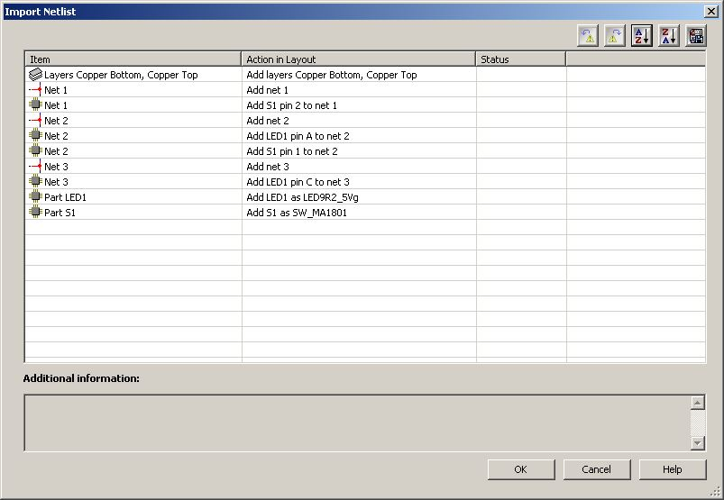

Electronics Design
This week I am going to learn something s\which I never thought that I could get to do, i.e to design and make a PCB all on my own. After Neils lecture, I started brushing up few basic electronics, and the common components. The next day, our local instructor Yadu gave a lecture on general electronics and after that our local instructor Vishnu gave a lecture on the usage of the EAGLE software suite. As usual I browsed the internet to find the various tools that could be used, and installed Virtual bread board, Fritzing, NI Mouser, KiCAD, and offcourse EAGLE, and later also tried few online tools like 3dbrdviewer, easydba, circuits.io, etc.
This weeks assignment is to redraw the echo hello-world board, and to add (at least) a button and LED (with current-limiting resistor), and then to check the design rules. Finally we need to make it and and test it. Andfor extra credits we could try to simulate and measure its operation.
EAGLE
EAGLE (Easily Applicable Graphical Layout Editor) is a flexible and expandable EDA(Electronic design automation) schematic capture, PCB layout, autorouter and CAM program. EAGLE, which is currently owned by Autodesk, has a free tier and also has many component libraries on the web. We will use Eagle to layout and modify a circuit board for this assignment
After installing Eagle on my windows laptop, I downloaded the fab.lbr, the library of the parts in fablab inventory. Also as per Vishnu's suggestion I also downloaded and added the sparkfun library too.
Firstly I created a project, and then a schematic on EAGLE. Later I identified and placed all the components, referring to the hello-worldboard details on the fab archive. After adding the parts, I located them to replicate Neil's layout and then did the wiring. Later I added one LED and a switch. I also did the board with this first design. Later I added two LEDs and a switch and re wired the board.

3Dbrdviewer
I wanted to visualize the board I have made before milling it. I explored for different applications that could do this and finally stumbled upon 3Dbrdviewer, which a cool browser based app that could enable us to viewour board in 3D. This app has 3D models of lot of components and we could also create and add our own 3D component models. After checking out some samples, I opened the board I've previously created in EAGLE. The resistors, and LEDs came without a glith, the ISP was bit out of place, the other parts I manually added and also needed to move to the pads a bit. Finally I was able to visualize the board. Currently there is no option to explore the 3D model outside the browser.
Fritzing
Fritzing is an open source initiative[2] to develop amateur or hobby CAD software for the design of electronics hardware, to support designers and artists ready to move from experimenting with a prototype to building a more permanent circuit. Its very easy to use and I tried creating simple circuits using breadboard, then a schematics and later a PCB too.

Virtual Breadboard
I have learned about VBB from the fab archive as like many other tools. VirtualBreadboard was designed as an emulator for Breadboard integrated circuits, being able to function as a development environment for microcontrollers, as well. Breadboard is a general term in electronics, referring more to the form of a circuit rather than its functionality, describing the construction base for electronics prototypes. The application’s range of uses varies from developing and debugging microcontrollers and emulating circuits to programming control panels for embedded applications and creating documentation for circuits. I installed VBB and explored the various features of it like component placing, wiring etc. I was not able to use the adruino emulator as the license was not available. But it could be a nice thing to have it tried.
NI Multisim and Ultiboard
NI Ultiboard or formerly ULTIboard is an electronic Printed Circuit Board Layout program which is part of a suite of circuit design programs, along with NI Multisim. One of its major features is the Real Time Design Rule Check, a feature that was only offered on expensive work stations in the days when it was introduced. I created a simple circuit in Multisim and did the simulation, and also created a sample board layout using Ultiboard.


EasyEDA
EasyEDA, is a web-based EDA tool suite that enables hardware engineers to design, simulate, share - publicly and privately - and discuss schematics, simulations and printed circuit boards. Other features include the creation of a Bill of Materials, Gerber and pick and place files and documentary outputs in PDF, PNG and SVG formats. EasyEDA allows the creation and editing of schematic diagrams, SPICE simulation of mixed analogue and digital circuits and the creation and editing of printed circuit board layouts and, optionally, the manufacture of printed circuit boards. Subscription-free membership is offered for public plus a limited number of private projects. The number of private projects can be increased by contributing high quality public projects, schematic symbols, and PCB footprints and/or by paying a monthly subscription. I imported the schematics and board I created using Eagle and explored the various features of EasyEDA, and I really found that its really easy to use.
KiCad
KiCad is an open source software suite for Electronic Design Automation (EDA). The programs handle Schematic Capture, and PCB Layout with Gerber output. The suite runs on Windows, Linux and OS X. I understood that this could be possible alternate for EAGLE, and I would really like to try out KiCad very soon.
Making the board
Then I milled the board, and then stuffed the parts as illustrated in the following images.
Then I soldered the parts starting with the IC, then the resonator, then the LEDs and Resistors and then the FTDI and finally the Resonator. I had the Eagle board drawing opened in front of me while soldering. I frequently used the view tool (the icon with an eye on the eagle software to highlight the traces, and zoom to find the corresponding traces.
Testing and Programming the board
Our Local instructor Vishnu guided me on the testing part. First I did a visual inspection of the soldered joints. Then continuity was checked using a multimeter. The continuity check enabled me to find a uncontacted solder onone of the ISP lead.
Then I did the echo hello-world program to see if the board works. The steps for programming are illustrated below.

Instead of validating the code in python, I used Cutecom, which is a is a graphical serial terminal. And the results obtained as shown in the screenshot below, showed that the board is working ok.
Conclusion
This week was very interesting in the sense, that I attempted to learn and do something which I did not tried at all before. I had a chance to evaluate few design tools, and my preference is to go with Fritzing, for the DIY like tasks, and Eagle for the fab activities. I would also want to try kicad as its an good opensourse alternate for Eagle. Also EasyEDA is another interesting EDA tool to look for wider acceptance in the near future. I also need to learn more about simulation, and need to do some more complex simulations than the one I have done this week.
The orginal files created as part this week's assignment is available via the link below.